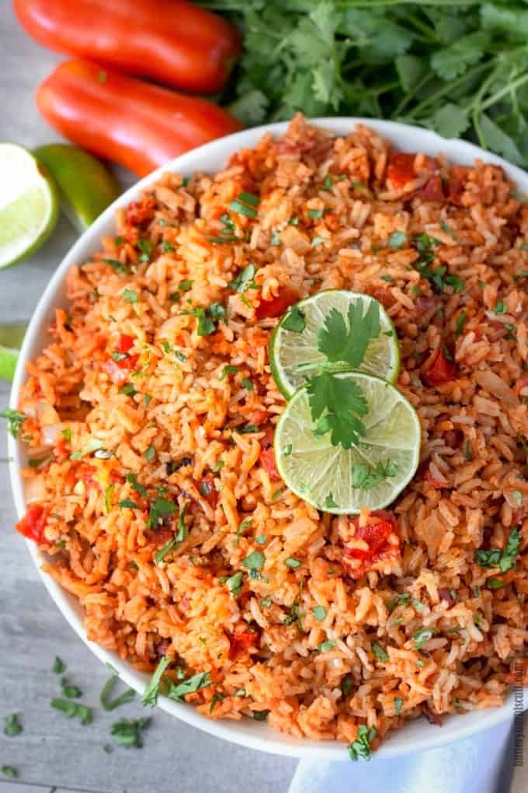

Mexican Rice

Mexican rice
This Mexican rice recipe makes a wonderful restaurant-style
side dish for any Mexican dinner.
Ingredients
- 3 tablespoons vegetable oil
- 1 cup uncooked long-grain rice
- 1 teaspoon garlic salt
- ½ teaspoon ground cumin
- ¼ cup chopped onion
- 2 cups chicken broth
- ½ cup tomato sauce